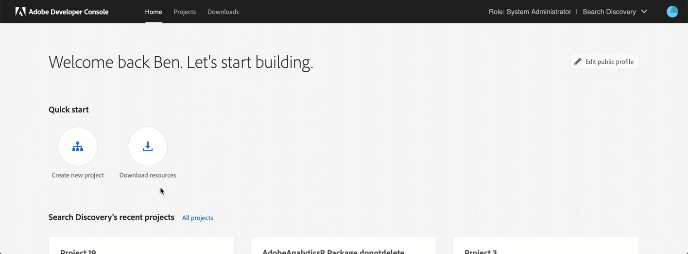
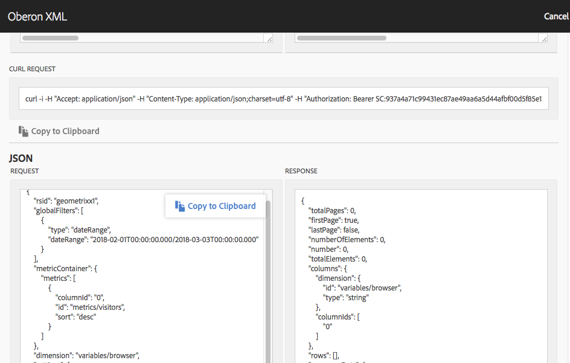

Use the generated JSON request string found in the OberonXML Debugger inside Analysis Workspace to pull data directly into R. Starter package for understanding the new Adobe Analytics API 2.0 which powers Analysis Workspace.
aw_token().get_me()
aw_report('filepath.json') function with the correct file pathhttps://adobeanalyticsr.com/token/result.html
https://adobeanalyticsr\.com/token/result\.html
Creating an Adobe Developer OAuth Project in under 60 seconds 
This file is essential to keeping your information secure. It also speeds up analysis by limiting the number of arguments you need to add to every function call.
Create a new file and save it with the name ‘.Renviron’.
Get the following variables from the OAuth project and add them to the file. (see Creating an OAuth Client above)
AW_CLIENT_ID - OAuth client id found in the Adobe Developer ConsoleAW_CLIENT_SECRET - OAuth client secret key found in the Adobe Developer ConsoleAdd Company_id (optional)
AW_COMPANY_ID - Using the function ‘get_me()’ you can see all the companies you have access to.After defining these 3 variables in the .Renviron file, restart your session. Once restart is complete reload the awoberonr library, you should be able to run your first data extract using using aw_report("filepath.json").
aw_report("filepath.json") function